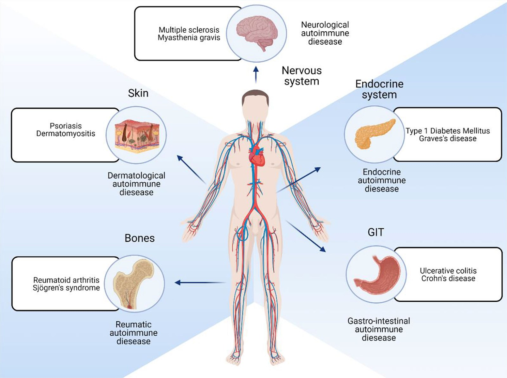
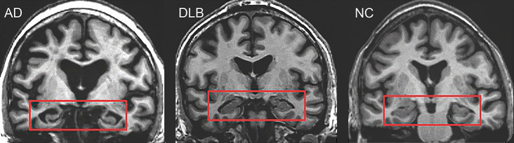

This is Part 2 in a series. Read Part 1 here.
Your previously healthy 1-year old develops Type 1 diabetes, a condition they will have for the rest of their life and that will require constant monitoring. Your partner has a stroke. Your parent shows early symptoms of Alzheimer’s disease. What do these seemingly disparate health events have in common? All can be triggered by viruses where the immediate infection seems mild.
A Life-Changing Diagnosis
When Maria’s 1-year old daughter came down with a cold, it initially seemed like no big deal. However, her cough lingered, and in the coming months she was diagnosed with type 1 diabetes, a condition which can not be cured and which her daughter will have for the rest of her life. Maria was thrust into a stressful world of needing to constantly monitor her baby’s blood sugar, where either too much or too little insulin could kill her baby.
In the wake of her cold, the baby’s immune system had mistakenly turned on her pancreas, permanently destroying the cells needed to generate insulin. Type 1 diabetes is not related to diet or lifestyle, and is far less predictable than the more famous type 2 diabetes. As Maria writes, “We can do the same thing every day… and all our efforts simply do not work. It’s a never-ending battle. Diabetes never takes a break and needs to be managed 24/7/365 days a year… If we give too much insulin, she can go into a coma, and if we do not give her sufficient insulin, she can go into DKA [a life-threatening condition].”
Type 1 diabetes is often triggered by a viral infection. One study tracked viruses in stool samples from young children, month after month, and discovered that when kids have certain common childhood viruses for consecutive months, they are at much higher risk of having their immune systems develop autoimmunity against their own pancreas (a precursor to Type 1 diabetes).
What are autoimmune diseases, and how do they relate to viruses?
Type 1 diabetes is just one of many, many diseases caused by our own immune systems gone awry. These are known as autoimmune diseases. The Greek prefix auto means self. A key role of the immune system is to be able to distinguish between what is foreign and what is self, and it is harmful when the immune system erroneously learns to attack self. At its best, the immune system is a beautiful and complex orchestra working together for our good. However, the immune system is a double-edged sword that can cause great harm when it goes awry.
Despite impacting a wide range of body systems, all of the following examples are united in being autoimmune diseases:
- Crohn’s disease occurs when the immune system attacks the colon
- Rheumatoid arthritis occurs when the immune system attacks its own antibodies
- Multiple sclerosis occurs when the immune system attacks the protective coverings of neurons
- Lupus occurs when the immune system attacks our own DNA
- Hashimoto’s disease occurs when the immune system attacks the thyroid
- Psoriasis occurs when the immune system attacks skin cells

There is still much that is unknown about the onset of autoimmune diseases, although in many cases, a viral infection can be the trigger (there are likely other factors involved too, including genetic predisposition). During an infection, our adaptive immune systems learn to recognize small patterns of molecules that indicate a pathogen or infected cell. Unfortunately, if these small patterns appear similar to elements of our own bodies, the body may continue attacking itself even once the acute infection is over.
Obstacles in research and treatment
Women are more likely to develop autoimmune diseases, and there are numerous differences in women’s immune systems compared to men. Like most diseases disproportionately impacting women or people of colour, autoimmune diseases have too often been neglected when it comes to funding and research, leaving a rudimentary understanding, inadequate treatments, and lots of open questions.
Moreover, autoimmune diseases have often been treated in different silos, based on which body system they impact. Crohn’s disease is studied by gastroenterologists, psoriasis by dermatologists, and Hashimoto’s by endocrinologists. While there are reasons for this approach, it can also hinder research on deeper patterns amongst autoimmune disorders. Once someone develops one autoimmune disease, they are significantly more likely to develop additional ones, which is another reason why studying common underlying causes and mechanisms would be helpful.
Autoimmune disorders are often treated with medications that suppress the immune system to keep it from attacking the patient’s own body. While these medications can be crucial in addressing symptoms, they come with the significant downside of inhibiting how the immune system responds to foreign invaders, making the patient vulnerable to infection.
Viruses can cause neurodegenerative diseases too
Diseases that cause cells in the brain or nervous system to lose function and eventually die are referred to as neurodegenerative diseases. Some are also autoimmune diseases. Multiple sclerosis is perhaps the best known disease that is firmly established as both neurodegenerative and autoimmune. In this disease, the immune system attacks the protective sheaths coating nervous cells in the spinal cord and brain. Evidence is growing that ALS (also known as Lou Gerig’s disease), Parkinson’s disease have autoimmune causes, and some researchers are asking if Alzheimer’s is an autoimmune disease too.
Common viruses increase the risk of developing a neurodegenerative disease, for up to 15 years after the viral infection. A study drawing on datasets of 800,000 people across Finland and the UK looked at how various viruses could increase likelihood of neurodegenerative diseases such as multiple sclerosis, ALS, Parkinson’s, Alzheimer’s and dementia, and found many significant links. For instance, six different groups of viruses (including flu and viral pneumonia) were linked to an increased risk of developing dementia. Viral encephalitis (a virus which in many cases causes only mild, flu-like symptoms) raised the risk of developing Alzheimer’s disease. These were just a few of the associations found.

For decades, research on Alzheimer’s Disease was dominated by a hypothesis that mostly turned out to be a dead-end. Funding and support was funnelled toward projects that failed (and in some cases, were based on fraudulent data), while other researchers (whose ideas are now being proven correct) faced hostility and extreme difficulty obtaining grants. For decades, the idea of viruses being a cause of Alzheimer’s was considered absurd, with only a few lone researchers pursuing it in the face of pushback and ostracism, yet now ever more research is accumulating to support this idea.
A core idea in Alzheimer’s research has turned out to be backwards: what was considered to be an intrinsically abnormal and useless protein (amyloid-beta) causing Alzheimer’s has turned out to be a part of our innate immune response, intended to protect the brain against infection. Amyloid-beta may be inadvertently causing harm, but it likely builds up as a protective reaction against a more fundamental root cause. Amyloid-beta has positive, anti-microbial properties for fighting off invaders. A large study from Taiwan found that HSV-1 infections increased the risk of developing dementia, but that treating these infections with antiviral medication lowered that risk.
Science is political
There have been many hurdles to pursuing the role of infection in contributing to Alzheimer’s: the siloed nature of science (virology and Alzheimer’s were seen as two very disparate areas); the failure of many to understand asymptomatic infection; and the political nature of medicine.
Science does not just progress inevitably. Instead, politics, biases, and even trends all impact which ideas receive the opportunities, funding, and support for progress to be made. A reluctance over decades to adequately fund post-viral research, to explore links between viruses and neurodegenerative diseases, or to take autoimmune diseases (which disproportionately impact women) seriously, has left us knowing far less than we could. Treating autoimmune diseases all in separate silos has limited progress, as has treating neurodegenerative diseases siloed away from virology.
In a previous essay, I wrote of the political nature of medicine, including several key case studies:
- Serious political battles and protests were needed to get AIDS taken seriously.
- An ongoing lack of funding for ME/CFS research, spanning decades, even though ME/CFS patients have the lowest quality of life of pretty much any illness. Commensurate to disease burden, NIH funding for ME/CFS is at only 7%, depression and asthma are at 100%, and diseases like cancer and HIV are closer to 1000%.
Our understanding of the wide-ranging, surprising, and sometimes devastating impacts of viruses is growing everyday, with new scientific discoveries and connections being made. If we can accelerate support for such research, as well as work to reduce transmission of viruses, we could significantly improve human well-being.
This is Part 2 in a 3-part series. Read Part 1 here and stay tuned for Part 3.